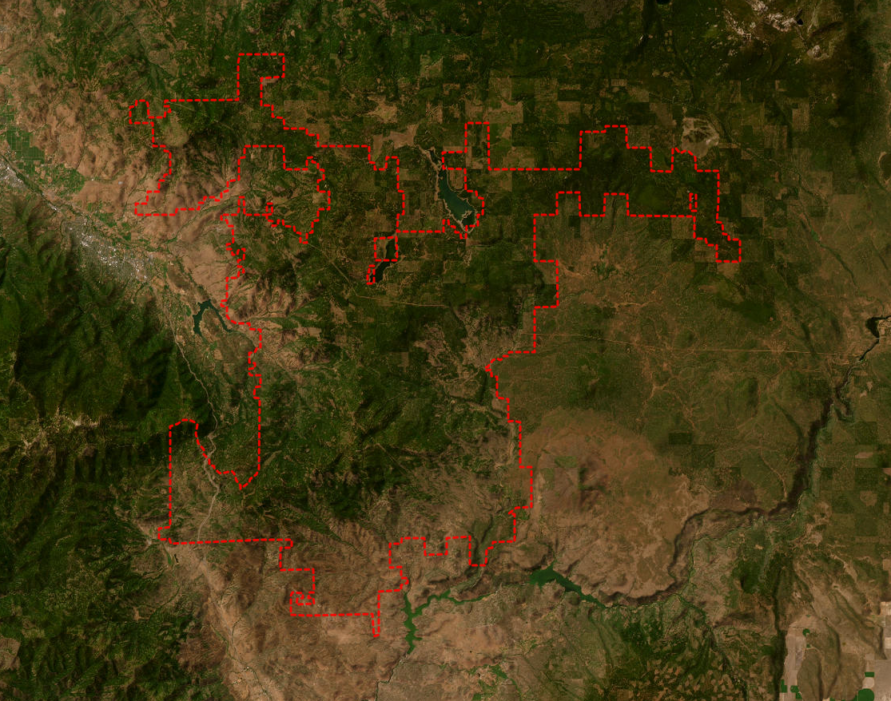

A Landscape Born from Fire and Time
In southern Oregon, where the ancient Klamath Mountains meet the volcanic Cascades, lies a remarkable testament to geological complexity: the Cascade-Siskiyou National Monument.
This unique landscape tells a story written in soils—a story of ancient ocean floors thrust skyward, volcanic eruptions that shaped the land, and millions of years of weathering that created some of North America's most distinctive soil ecosystems.
114,000
acres protected
12
soil orders present
3,500
years old (oldest trees)

The Cascade-Siskiyou National Monument spans the convergence of three major mountain ranges, creating a complex landscape of diverse soils and ecosystems